LES COMPOSANTS D'UN PC
Ici, vous trouverez toutes les informations sur les différents composants de l'ordinateur, ainsi que les supléments à ajouter pour avoir du wifi par exemple.
La Carte Mère.
La carte mère va relier tous les composants de votre machine pour qu'ils puissent communiquer entres eux, c'est également elle qui reçoit l'électricité en provenance de l'alimentation.
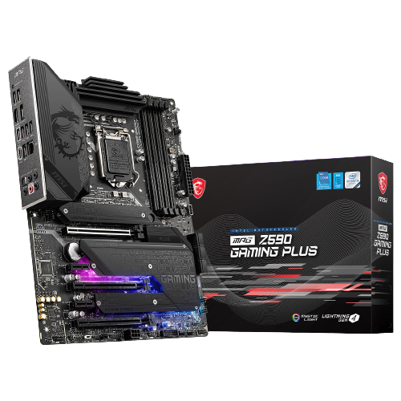Le Processeur. (CPU)
Le processeur c'est le cerveau de votre PC, il va effectuer tous les calculs que la machine aura besoin de réaliser. Plusieurs constructeurs existent mais nous en avons cité deux qui sont les plus connus du grand public : Intel® et Amd®
Celui-ci chauffe plus ou moins en fonction de l'usage que l'on lui donne. Celui-ci dispose d'une sécurité qui permet par exemple d'éteindre votre machine en cas de surchauffe de celle-ci pour limiter les potentiels risques d'incendies et de dégradation de votre matériel, c'est pourquoi il est important de lui mettre dessus un Ventirad & WaterCooling.
Celui-ci est miniaturisé pour les PC portables.
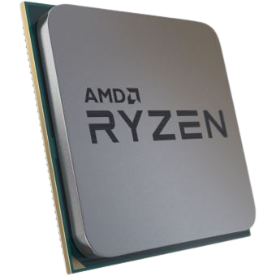 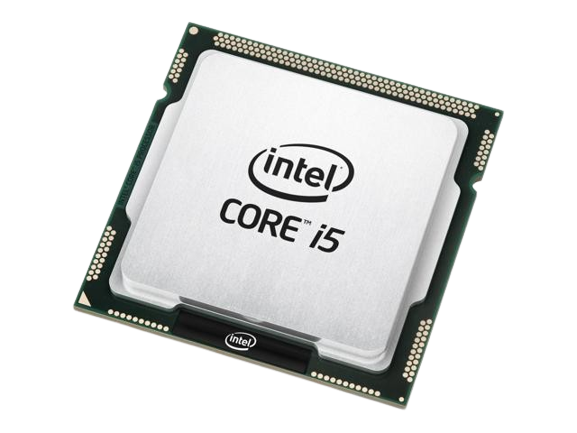La Mémoire Vive (RAM).
La mémoire vive souvent appelé "RAM" pour "random access memory" et une mémoire très rapide utilisée par l'ordinateur pour stocker des données qui doivent être supprimées dans un cours délai, comme pour par exemple charger une page WEB.
A noter que celle-ci, et contrairement à une mémoire "ROM", ne garde pas les données qu'elle contient si elles ne sont plus alimentées en électricité.
Pour les ordinateurs portables celles-ci sont miniaturisées et alors on parle de barrettes au format "SODIMM" contrairement à une barrette de PC fixe où l'on parle de barrettes au format "DIMM"
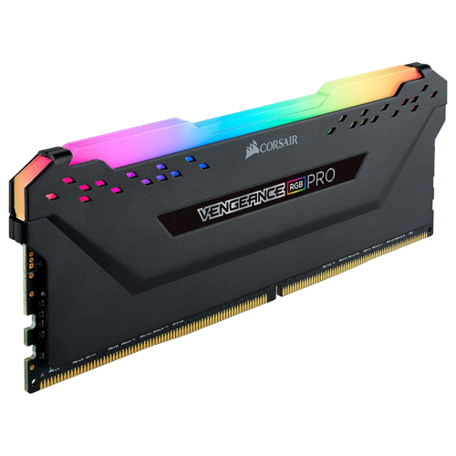 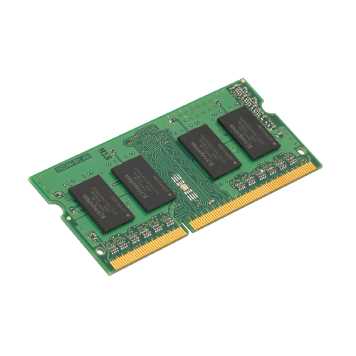Le Média De Stockage (HDD/SSD)
Pour stocker toutes vos données, il vous faut un média de stockage de différentes capacités.
Tout d'abord, quelles sont les différences entres les "HDD" pour "Hard Disk Drive" et "SSD" pour "Solid Stat Drive" ?
Le HDD.
Le HDD est un média comprenant un disque dur comme son nom l'indique et une tête de lecture à l'intérieur et une carte PCB comprenant un microcontrôleur et d'autres composants à l'extérieur. Le disque tourne entre 4200 et 7200rpm/min pour que la/les têtes (le nombre de tête(s) varie en fonction de la capacité totale du disque) de lectures n'ont plus qu'à "survoler" le disque pour y graver des données. Elles sont activées via électromagnétisme ce qui permet un déplacement très rapide de celles-ci au-dessus du/des disque(s).Il existe différentes tailles le 3.5" et le 2.5" (le 2.5" et principalement pour les pc portable)
Le SSD.
Le SSD reprend le même concept que le HDD mais uniquement au niveau de l'extérieur. Effectivement Le SSD n'a aucune mécanique contrairement à un HDD car il n'est fait que de puces de stockages qui sont beaucoup plus rapide par rapport au HDD. Le SSD existe sous différentes formes : -SATA, -M.2 NVME. Le plus rapide d'entre eux est le M.2 NVME.
 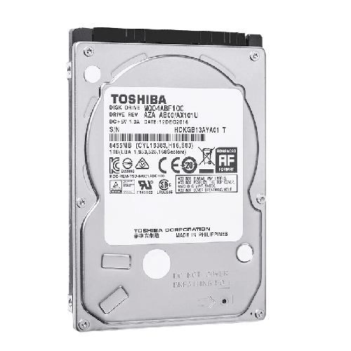
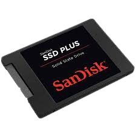
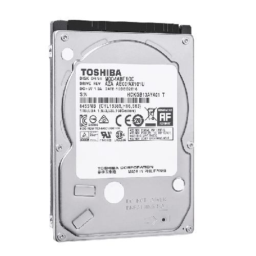
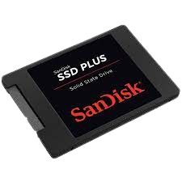
 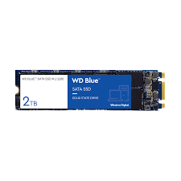
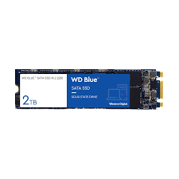
L'alimentation.
L'alimentation électrique de votre PC fournie toute l'énergie nécessaire au bon fonctionnement de votre machine. Si le PC consomme trop par rapport à la capacité de l'alimentation celle-ci se coupe par mesure de sécurité.
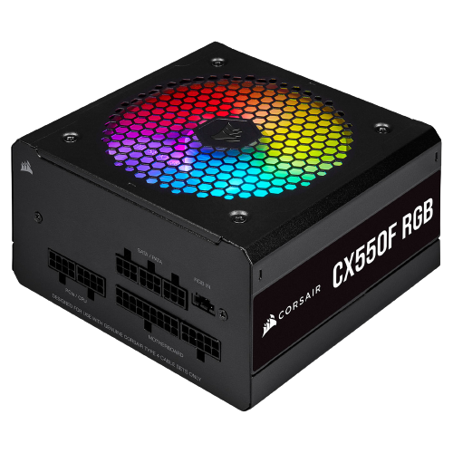 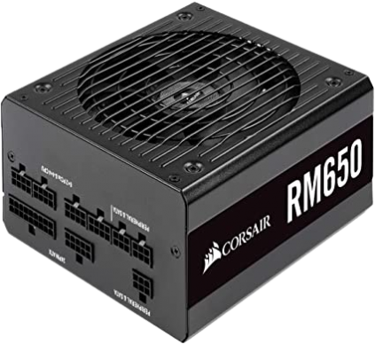Le Boitier.
Le boitier va contenir l'ensemble de vos composants, ils existent sous différents designs.Dedans, vous devrez y monter l'intégralité des composants pour votre machine.
Il peut exister sous des formes qu’elles soient spéciales ou sobres, de toutes les couleurs, en différents matériaux, ainsi qu'avec une vitre pour montrer les composants de la machine, les gamers en sont très friands !
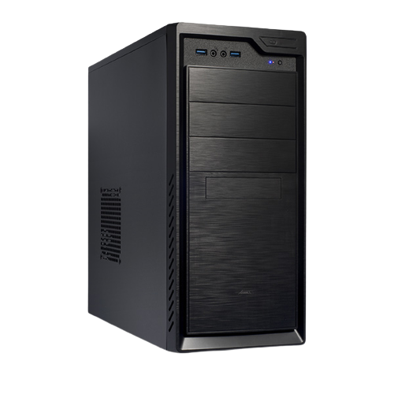 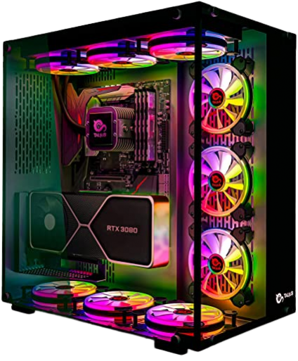La Carte Graphique. (GPU)
La Carte Graphique comme son nom l'indique fera tous les calculs graphiques d'un ordinateur, elle est principalement utilisée pour faire de la 3D et du jeu vidéo.
Celle-ci n'est pas obligatoire si vous êtes équipé du processeur ayant une partie graphique intégrée (APU), celui-ci effectuera le travail de la carte graphique, certes vous aurez moins de puissance mais pour une machine de bureautique cela sera amplement suffisant.
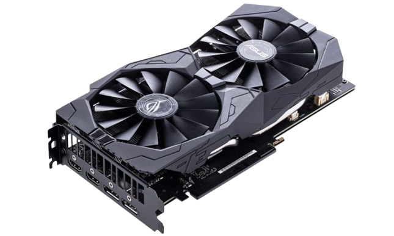 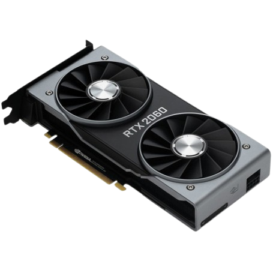Le Ventirad/WaterCooling.
Le Ventirad et le WaterCooling sont des dispositifs de refroidissement à placer sur le processeur pour le refroidir.
La principale différence c'est que le ventirad utilise un ventilateur et des caloducs, tandis que le Watercooling utilise de l'eau.
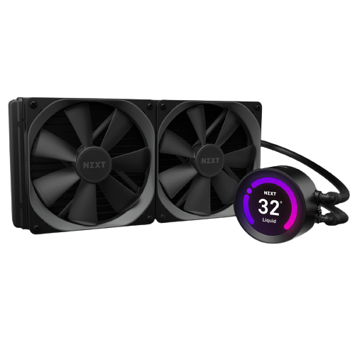 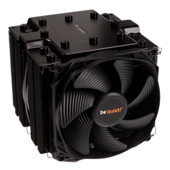Le Lecteur Graveur.
Le lecteur graveur sert à lire des CD/DVD, bien qu'il ne serve plus beaucoup aujourd’hui, il peut tout de même rester parfois utile !
Celui-ci ne vous servira que si vous voulez utiliser des CD/DVD, mais attention, les boitiers récents n'acceptent plus ce type de composants. Il existent aussi au format portable pour plus de mobilité. Remplacez ce texte par des informations sur vous et votre entreprise ou ajoutez des informations qui seront utiles à vos clients.
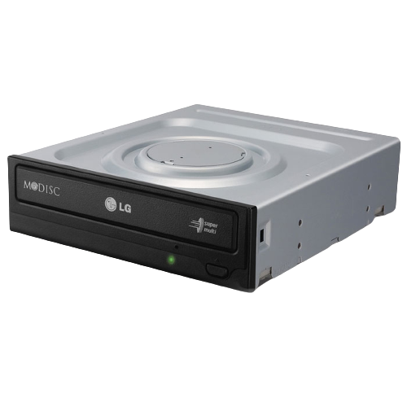La Carte Réseau.
La carte réseau d'un ordinateur permet de se connecter à internet et au réseau local : télévision , smartphone, tablette, console, imprimante réseaux, etc. Elle est installée sur la carte-mère et se connecte au réseau via un adaptateur USB-Ethernet ou un câble RJ45.
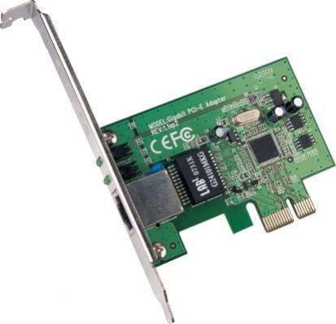La Carte Son.
La carte son, également appelée carte audio, gère les entrées et les sorties des sons de l'ordinateur. Elle est intégrée à la carte-mère ou connectée à celle-ci grâce au port PCI.Elle permet de connecter des éléments externes à l'ordinateur. Remplacez ce texte par des informations sur vous et votre entreprise ou ajoutez des informations qui seront utiles à vos clients.
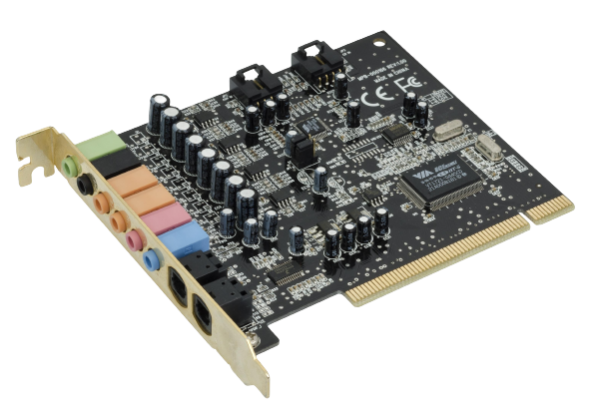